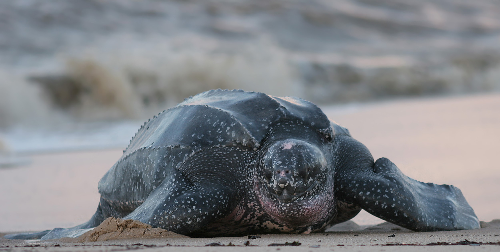

Tudo sobre tartarugas
Tartarugas m são repteis marinhos que habitam o planeta Terra por mais de 170 milhões de anos, originados de tartarugas de água doce, que devido a pressão da sobrevivência decidiram migrar para o mar, tendo atualmente 8 espécies vivas de duas classes distintas (cheloniidae e Dermochelyidae).
 tartaruga de couro
Tartarugas são repteis marinhos que passam a maior parte da sua vida no oceano (saindo somente as fêmeas para desovarem), a maioria das espécies possuem casco que cobrem a maior parte do corpo (exceto a espécie ‘tartaruga-de-couro’ que pelo nome já dá para ter uma noção), sua dieta é onívora (exceto a tartaruga verde) e possuem dimorfismo sexual (diferença entre sexos) atingem sua maturidade sexual aos 20 anos (exceto a tartaruga oliva que começão aos 15 anos).
Pela sua dieta ser onívora, eles comem qualquer coisa que estiver fácil de abocanhar, o qual infelizmente ingere lixo tipo plástico e alumínio (o que mais está presente nas praias), engasgando e morrendo.
Essa causa de morte é a mais comum entre as tartarugas marinhas, pois afinal é uma quantidade absurda de lixos que são jogadas em todos os anos e as organizações não estão conseguindo lidar com essa situação.
De 100.000 ovos chocados, menos de 10% das tartarugas sobrevivem.